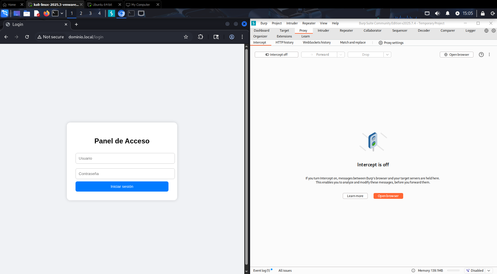
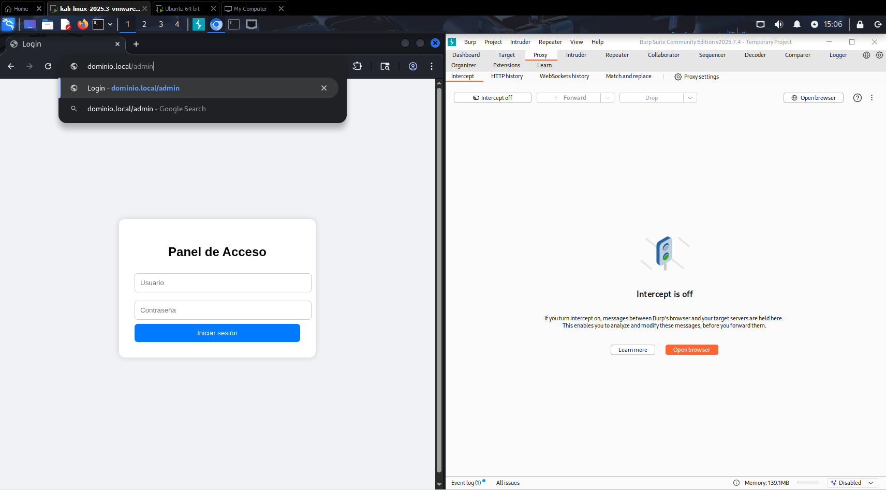
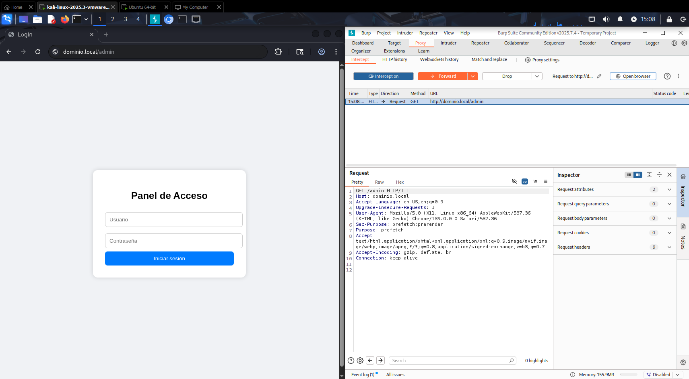
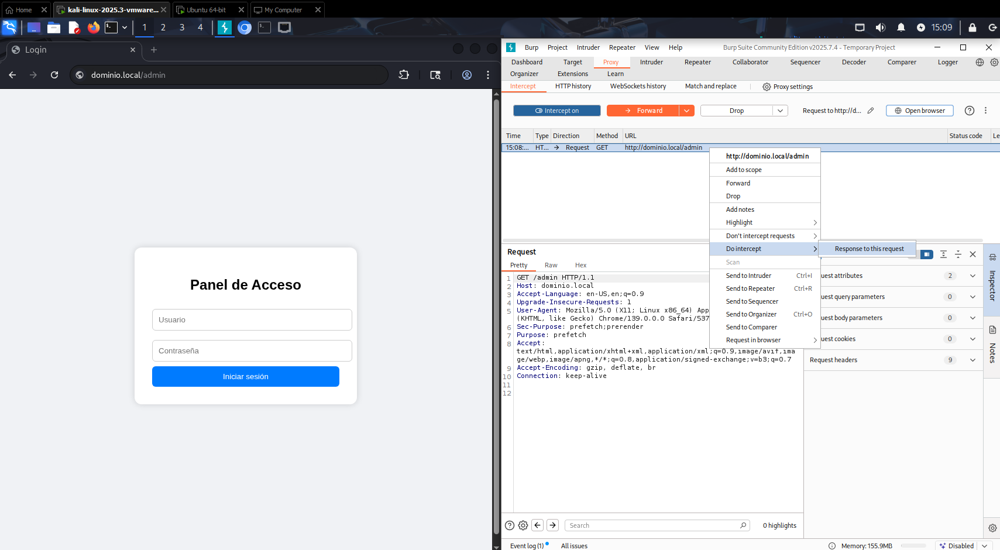
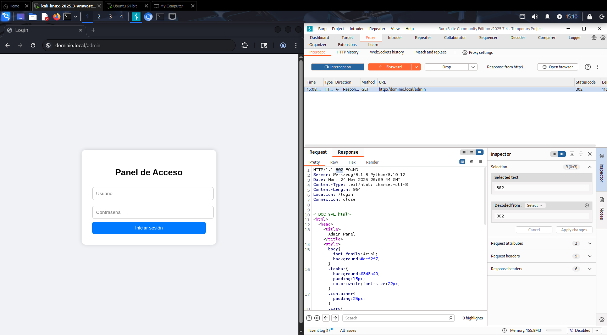
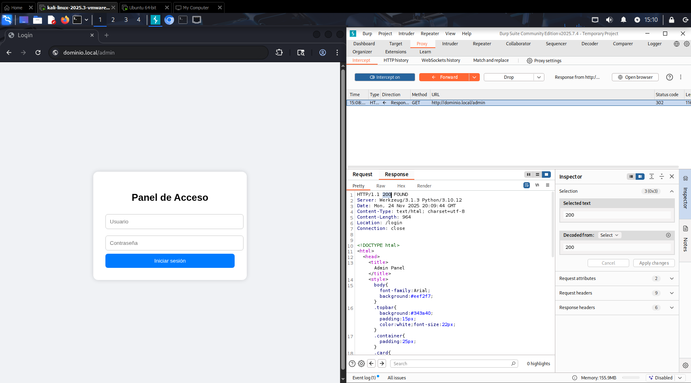
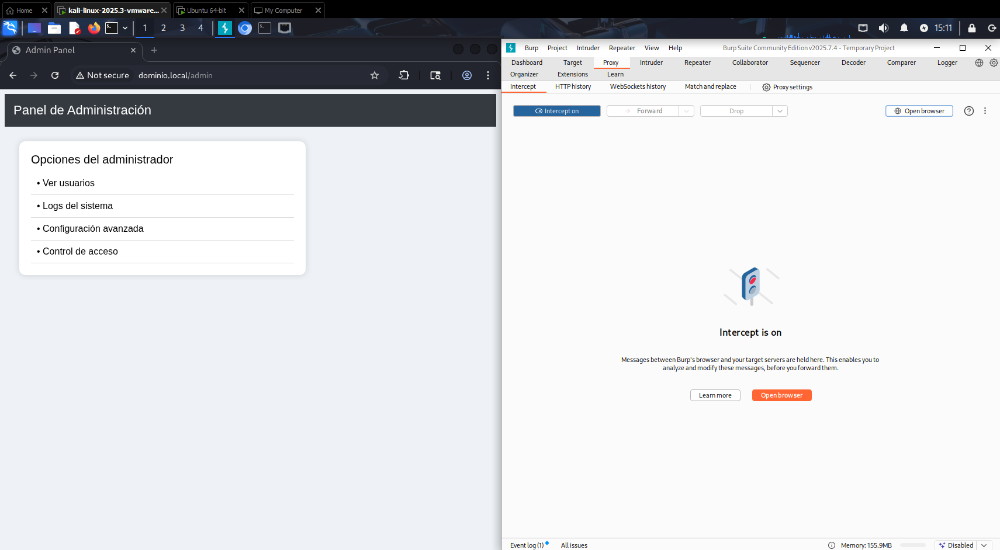

Bypass de login inseguro con Burp Suite
En este apartado exploraremos cómo analizar un login inseguro utilizando BurpSuite desde
una perspectiva totalmente ética y orientada a fortalecer la seguridad. Veremos cómo un
atacante podría aprovechar una mala implementación para intentar acceder sin autorización
y, sobre todo, aprenderemos a identificar estas debilidades para poder corregirlas. El objetivo
es comprender el riesgo, conocer la metodología básica de análisis para poder aplicar buenas prácticas
que permitan mejorar la protección de nuestras aplicaciones y sistemas.
Antes de empezar asegurate de tener el entorno preparado y en este caso usaremos una maquina virtual con
Kali para poder realizar la práctica en este caso se usa un servidor básico de python.
Paso 1 - Ejecutar Burp Suite, abrir su navegador y acceder a la web vulnerable
En este paso vamos a ejecutar Burp Suite desde kali, después entramos al apartado Proxy donde abriremos su navegador web dandole a "Open browser" y ahí accederemos a la web insegura, en este caso "dominio.local/login"
Al poner la url del panel de admin, nos redirigirá al panel de acceso de nuevo, ya que no tenemos las creedenciales de administrador.
Paso 2 - Recepción del paquete
Ahora activamos el interceptador, dandole click a "intercept off" para cambiarlo a "intercept on" y volvemos a cambiar la url por la del panel de admin. Como vemos hemos interceptado el paquete de petición para el panel de administrador.
Ahora vamos a interceptar la respuesta de esa petición, para eso le damos click derecho sobre el paquete > "Do intercept" > "Response to this request". Por último le damos a "Forward" para que enviar la petición al servidor y recoger la respuesta de este.
Paso 3 - Modificación del paquete de respuesta
Ahora vemos el paquete que nos ha devuelto el servidor, donde vemos que nos ha proporcionado un código de estado de 302 que significa que ha encontrado la página, y vemos el contenido en código de la misma, donde pone la redirección hacia el "/login" que es el panel de inicio de sesión.
Cambiamos el código de estado de 302 a 200 el cual le indica al servidor que todo ha salido bien, y que se puede acceder. Le daremos a "Forward" para enviar el paquete modificado al server.
Paso 3 - Panel de administración
Como resultado tendremos acceso al panel de administración, por esto es importante de asegurar el login a la hora de programar las páginas webs y preparar los servidores web.
